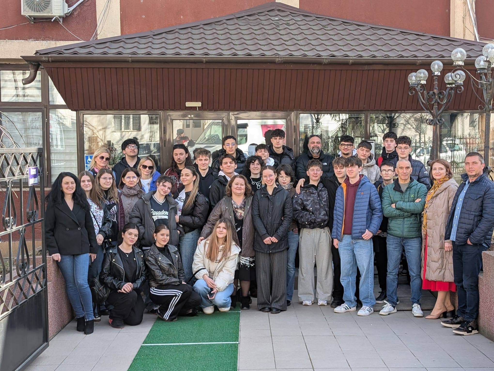
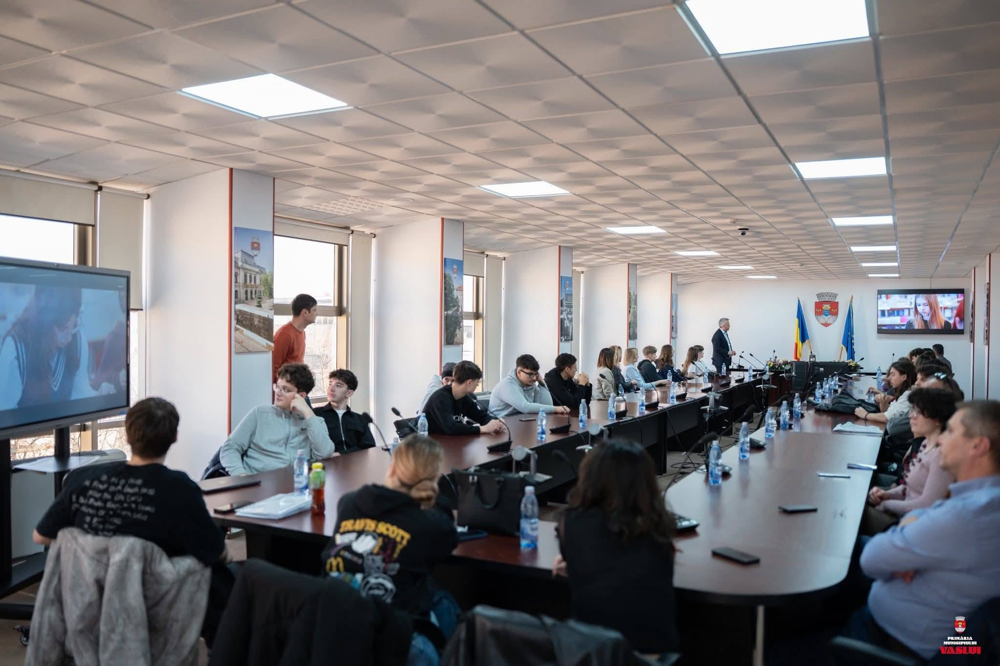
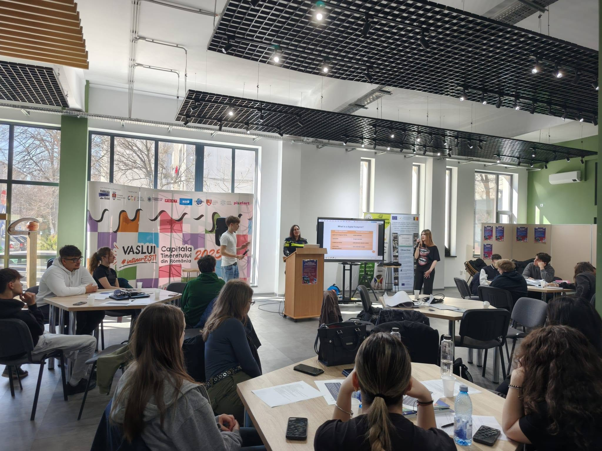

Development of STEM competencies
We turned concepts into practical challenges, building confidence through making, testing and sharing.
ERASMUS+ DIGI-EQUAL
DIGI-EQUAL is committed to digital skills, developing and the use of technology in education, as well as fostering inclusion and equal access to education.

We turned concepts into practical challenges, building confidence through making, testing and sharing.
Increasing the students’ ability to use online media for communication, collaboration and autonomous learning
Different languages and backgrounds became a starting point for curiosity, not a barrier.

The first day of the meeting was dedicated to getting to know one another and to activities focused on digital education.
Developed competencies
Digital skills | Communication | Linguistic skills | Cultural knowledge

The second day of the Erasmus+ DigiEqual project was dedicated to developing digital skills and critical thinking through interactive activities and thematic workshops.
Developed competencies
Digital skills | Critical thinking | Cultural knowledge
Develop your knowledge by studying materials used by pupils of high school and resources used in activities
The human outcome
I arrived nervous about speaking English. I left with friends I still message every day.
— Ana, participating student
The workshops showed me that technology is not only about screens. It is about giving people more possibilities.
— Radu, participating student
Working in an international team made me trust my own ideas much more.
— Elena, participating student